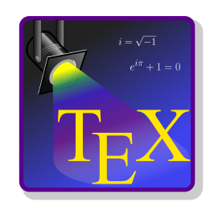

üì± (+62) 812-7548-0237 üáÆüá©
Founder of MRF Laboratorium website | Computer Science Alumnus | Lifelong Learner

Welcome honourable reader! I am M. R. Fahlevi, a \(\textit{cum laude}\) computer science fresh graduate ü뮂Äçüéì
üî≠ I‚Äôm currently looking for scholarship and promoter for master or doctoral degree üéì.
üìñ I‚Äôm currently learning and interested in Pattern Recognition and Machine Learning
üìö A long life learner.
üíª Hobby: Beside reading, writing, and research, I like to compute a things from scratch. For example, computing pseudo random number generator, numerical algorithms, statistics, and (meta) heuristic algorithms.
⚡ Fun fact: The initial motive of developing this website is to get attention of the promoter of Pendidikan Magister menuju Doktor untuk Sarjana Unggul (PMDSU) scholarship (beasiswa PMDSU). So, I may look appeal to the promoter.
üè´ Ambition: Be a lecturer ü뮂Äçüè´ is my ambition and I am determined to be one.
My Skill Set
Web Development : |
|||

Bootstrap |

CSS |

Javascript |

HTML5 |
|
Git |

GitHub |
Bash |

XAMPP |

MySQL |

Shiny |
||
Computation : |
|||
|
C++ |

R |

Python |

Java |
|
Julia |
Octave |
Rcpp |
OpenCV |
| Writing : | |||
|
LaTeX |

TeXstudio |
LyX |

RStudio |
Operating Systems : |
|||
|
Fedora Linux |
Windows 10 |
Github Stats
Thank you for your time and attention for visit my website. The following are short description about my curriculum vitae.
Education

- University of Sumatera Utara (Kota Medan, Sumatera Utara, Indonesia) August \(2018 - 2022\)
- Bachelor of Computer Science (Sarjana Ilmu Komputer - \(\text{S.Kom.}\))
- \(\text{GPA (IPK)} \colon 3.56 \text{ } (3,56)\)
- Favorite classes: Heuristic Method | Design & Analysis of Algorithms | Artificial Intelligence | Probability and Statistics | Numerical Analysis | Image Processing | Modelling Technique and Simulation | Calculus | Discrete Mathematics | Automata — Grammar and Language
Research
Published:
- Muhammad Reza Fahlevi, & Budiman, M. A. (2021). Computing the Value of Pi in the Manner of Lambda Function with R Statistical Programming Lan- guage. Data Science: Journal of Computing and Applied Informatics, 5(1), 39-48. https://doi.org/10.32734/jocai.v5.i1-5556
Work Experience
- Badan Pusat Statistik Kab. Kampar \(-\) Software Developer Intern. Build a software for Desa Cinta Statistik Desa Laboy Jaya using R Shiny framework (Jul - Aug \(2021\))
Projects
- ShinyImageProcessing : An R shiny image processing app simulation contain bluring, RGB filtering, Median filtering, 3 × 3 kernel convolution, generate 3 type of noise in images, and edge detection.
- RCGA: A real-coded genetic algorithm for solving real-parameter optimization problem for function in R3 , written in R and Python.
- ilkom : R packages to find critical value of statistics z, t, χ2 , and f for dynamic significance level by using heuristics procedure based on binary search, bisection method, and tabu search.
- VNS: Minimizing error sum of square (SSE) of multi-linear regression model using Variable Neighborhood Search for continuous optimization problem.
- TSP: Solving Travelling Salesman Problem (TSP) by using Simulated Annealing (SA) and Tabu Search (TS) algorithm.
Technical Skills and Interest
- Languages: R | Python | Julia | C++ | Rcpp | LaTeX | MySQL | Javascript | HTML | CSS | Bootstrap | Java
- Software & Tools: RStudio | Visual Studio Code | Lyx High Level Latex Frontend | VIM | R Shiny | dplyr | ggplot2 | plotly | pandas | Jupyter Lab
- Current Interest: (Meta) Heuristics Method | Probability & Statistics | Data Analysis | Design & Analysis Algorithm | Pattern Recognition & Machine Learning | Deep Neural Evolution
- Awards: Participant in Province Science Olympiad for Chemistry, year 2017 | Participant in Province English Debate Competition, year 2017